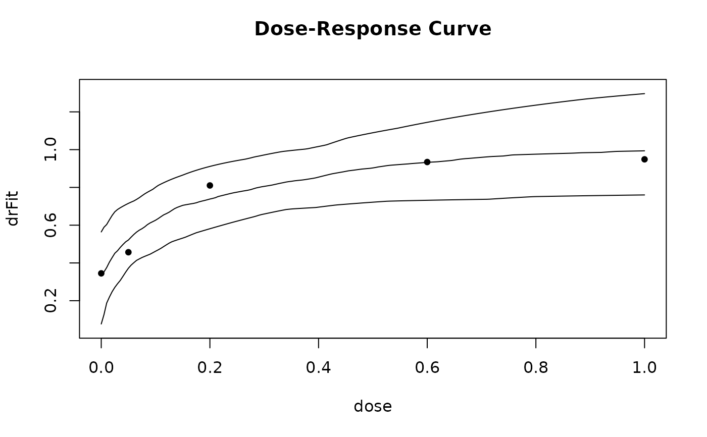

Fit a dose-response model using Bayesian or bootstrap methods.
bFitMod.RdFor type = "Bayes", MCMC sampling from the posterior distribution of
the dose-response model is done. The function assumes a multivariate
normal distribution for resp with covariance matrix S,
and this is taken as likelihood function and combined with the prior
distributions specified in prior to form the posterior distribution.
For type = "bootstrap", a multivariate normal distribution for
resp with covariance matrix S is assumed, and a large
number of samples is drawn from this distribution. For each draw the
fitMod function with type = "general" is used to fit the draws
from the multivariate normal distribution.
Usage
bFitMod(dose, resp, model, S, placAdj = FALSE,
type = c("Bayes", "bootstrap"),
start = NULL, prior = NULL, nSim = 1000,
MCMCcontrol = list(), control = NULL, bnds,
addArgs = NULL)
# S3 method for class 'bFitMod'
coef(object, ...)
# S3 method for class 'bFitMod'
predict(object, predType = c("full-model", "effect-curve"),
summaryFct = function(x) quantile(x, probs = c(0.025, 0.25, 0.5, 0.75, 0.975)),
doseSeq = NULL, lenSeq = 101, ...)
# S3 method for class 'bFitMod'
plot(x, plotType = c("dr-curve", "effect-curve"),
quant = c(0.025, 0.5, 0.975),
plotData = c("means", "meansCI", "none"),
level = 0.95, lenDose = 201, ...)Arguments
- dose
Numeric specifying the dose variable.
- resp
Numeric specifying the response estimate corresponding to the doses in
dose- S
Covariance matrix associated with the dose-response estimate specified via
resp- model
Dose-response model to fit, possible models are "linlog", "linear", "quadratic", "emax", "exponential", "sigEmax", "betaMod" and "logistic", see
drmodels.- placAdj
Whether or not estimates in "placAdj" are placebo-adjusted (note that the linear in log and the logistic model cannot be fitted for placebo-adjusted data)
- type
Character with allowed values "Bayes" and "bootstrap", Determining whether samples are drawn from the posterior, or the bootstrap distribution.
- start
Optional starting values for the dose-response parameters in the MCMC algorithm.
- prior
List containing the information regarding the prior distributions for type = "Bayes". The list needs to have as many entries as there are model parameters. The ordering of the list entries should be the same as in the arguments list of the model see (see
drmodels). For example for the Emax model the first entry determines the prior for e0, the second to eMax and the third to ed50.For each list entry the user has the choice to choose from 4 possible distributions:
norm: Vector of length 2 giving mean and standard deviation.t: Vector of length 3 giving median, scale and degrees of freedom of the t-distribution.lnorm: Vector of length 2 giving mean and standard deviation on log scale.beta: Vector of length 4 giving lower and upper bound of the beta prior as well as the alpha and beta parameters of the beta distribution
- nSim
Desired number of samples to produce with the algorithm
- MCMCcontrol
List of control parameters for the MCMC algorithm
thinThinning rate. Must be a positive integer.wNumeric of same length as number of parameters in the model, specifies the width parameters of the slice sampler.adaptLogical whether to adapt thew(width) parameter of the slice sampler in a short trial run. The widths are chosen as IQR/1.3 of the trial run.
- control
Same as the control argument in
fitMod.- bnds
Bounds for non-linear parameters, in case type = "bootstrap". If missing the the default bounds from
defBndsis used.- addArgs
List containing two entries named "scal" and "off" for the "betaMod" and "linlog" model. When addArgs is NULL the following defaults are used list(scal = 1.2*max(doses), off = 0.01*max(doses))
- x, object
A bFitMod object
- predType, summaryFct, doseSeq, lenSeq
Arguments for the predict method.
predType: predType determines whether predictions are returned for the dose-response curve or the effect curve (difference to placebo).
summaryFct: If equal to NULL predictions are calculated for each sampled parameter value. Otherwise a summary function is applied to the dose-response predictions for each parameter value. The default is to calculate 0.025, 0.25, 0.5, 0.75, 0.975 quantiles of the predictions for each dose.
doseSeq: Where to calculate predictions. If not specified predictions are calculated on a grid of length lenSeq between minimum and maximum dose.
lenSeq: Length of the default grid where to calculate predictions.
- plotType, quant, plotData, level, lenDose
Arguments for plot method.
plotType: Determining whether the dose-response curve or the effect curve should be plotted.
quant: Vector of quantiles to display in plot
plotData: Determines how the original data are plotted: Either as means or as means with CI or not. The level of the CI is determined by the argument level.
level: Level for CI, when plotData is equal to meansCI.
lenDose: Number of grid values to use for display.
- ...
Additional arguments are ignored.
Details
Componentwise univariate slice samplers are implemented (see Neal, 2003) to sample from the posterior distribution.
Value
An object of class bFitMod, which is a list containing the matrix of posterior simulations plus some additional information on the fitted model.
Examples
data(biom)
## produce first stage fit (using dose as factor)
anMod <- lm(resp~factor(dose)-1, data=biom)
drFit <- coef(anMod)
S <- vcov(anMod)
dose <- sort(unique(biom$dose))
## define prior list
## normal prior for E0 (mean=0 and sdev=10)
## normal prior for Emax (mean=0 and sdev=100)
## beta prior for ED50: bounds: [0,1.5] parameters shape1=0.45, shape2=1.7
prior <- list(norm = c(0, 10), norm = c(0,100), beta=c(0,1.5,0.45,1.7))
## now fit an emax model
gsample <- bFitMod(dose, drFit, S, model = "emax",
start = c(0, 1, 0.1), nSim = 1000, prior = prior)
## summary information
gsample
#> Dose Response Model
#>
#> Model: emax
#>
#> Summary of posterior draws
#> mean sdev 2.5% 25% 50% 75% 97.5% n.eff
#> e0 0.347 0.139 0.0476 0.266 0.355 0.446 0.588 184
#> eMax 0.893 0.342 0.3428 0.652 0.856 1.074 1.742 156
#> ed50 0.378 0.335 0.0218 0.115 0.266 0.557 1.216 133
#>
#> Fitted to:
#> 0 0.05 0.2 0.6 1
#> 0.34491 0.45675 0.81032 0.93444 0.94871
## samples are stored in
head(gsample$samples)
#> e0 eMax ed50
#> [1,] 0.15284581 0.9570781 0.042075268
#> [2,] 0.03231835 0.8573154 0.044708444
#> [3,] 0.05388497 0.9142132 0.024812400
#> [4,] -0.05152308 0.8731606 0.008853658
#> [5,] 0.06155071 0.8297683 0.073817334
#> [6,] 0.22650197 0.9404226 0.217721379
## predict 0.025, 0.25, 0.5, 0.75, 0.975 Quantile at 0, 0.5 and 1
predict(gsample, doseSeq = c(0, 0.5, 1))
#> 0 0.5 1
#> [1,] 0.04759272 0.7076645 0.769421
#> [2,] 0.26585613 0.8132222 0.904595
#> [3,] 0.35469505 0.8794331 0.992379
#> [4,] 0.44627453 0.9414073 1.083946
#> [5,] 0.58765331 1.0659162 1.241633
## simple plot function
plot(gsample)
## now look at bootstrap distribution
gsample <- bFitMod(dose, drFit, S, model = "emax", type = "bootstrap",
nSim = 100, bnds = defBnds(1)$emax)
plot(gsample)

## now fit linear interpolation
prior <- list(norm = c(0,1000), norm = c(0,1000),
norm = c(0,1000), norm = c(0,1000), norm = c(0,100))
gsample <- bFitMod(dose, drFit, S, model = "linInt",
start = rep(1,5), nSim = 1000, prior = prior)
gsample <- bFitMod(dose, drFit, S, model = "linInt", type = "bootstrap",
nSim = 100)
## data fitted on placebo adjusted scale
data(IBScovars)
anovaMod <- lm(resp~factor(dose)+gender, data=IBScovars)
drFit <- coef(anovaMod)[2:5] # placebo adjusted estimates at doses
vCov <- vcov(anovaMod)[2:5,2:5]
dose <- sort(unique(IBScovars$dose))[-1]
prior <- list(norm = c(0,100), beta=c(0,6,0.45,1.7))
## Bayes fit
gsample <- bFitMod(dose, drFit, vCov, model = "emax", placAdj=TRUE,
start = c(1, 0.1), nSim = 1000, prior = prior)
## bootstrap fit
gsample <- bFitMod(dose, drFit, vCov, model = "emax", placAdj=TRUE,
type = "bootstrap", start = c(1, 0.1),
nSim = 100, prior = prior, bnds = c(0.01,6))
## calculate target dose estimate
TD(gsample, Delta = 0.2)
#> [1] 5.483246e-01 NA 2.082177e-02 NA 1.012294e+00
#> [6] 7.170960e+00 9.170305e-02 1.164439e+00 4.473308e-01 8.647422e-03
#> [11] 8.524866e-01 3.265359e-01 6.115726e-03 6.464406e-01 1.168766e+00
#> [16] 8.012687e-02 4.644101e-02 2.918858e-01 1.980985e-02 8.306477e-03
#> [21] 3.249893e+00 5.186899e-02 6.817803e+02 NA 3.955707e-01
#> [26] 1.173023e-02 1.762746e-02 1.609045e+00 3.311992e-01 1.252110e+00
#> [31] 1.046662e-02 3.420285e-02 3.278316e-01 7.190523e-01 1.830558e+00
#> [36] 4.315960e-01 6.644240e-01 4.524656e-01 2.626864e+00 9.839347e-03
#> [41] 8.395836e-01 8.418548e-01 9.022919e-01 3.124601e-01 4.169349e-01
#> [46] 1.878729e-02 1.573643e-01 2.584459e-01 1.086026e+00 2.016593e-02
#> [51] 1.142066e-01 1.245746e-02 5.157838e-02 NA 1.162715e+00
#> [56] 6.292261e-01 2.938004e-01 4.014124e-01 8.601197e+00 1.414026e-02
#> [61] 4.714891e-02 NA 2.442323e+00 NA 1.013448e-01
#> [66] 1.678585e-01 1.624529e-02 9.736559e-01 9.079957e-01 2.013135e+00
#> [71] 5.200823e-01 3.835070e-01 2.728112e-02 6.631502e-01 2.449805e-02
#> [76] 1.046263e+00 3.623976e-01 1.311963e+00 1.315941e+00 NA
#> [81] 6.498328e-02 7.201673e+00 1.084076e-02 7.791422e-01 2.891102e+01
#> [86] 2.429044e+00 6.605563e-01 3.567867e-01 1.220284e-02 1.625772e+00
#> [91] 4.291899e-01 6.428695e-03 8.695904e-01 6.967239e-01 1.238257e+00
#> [96] 2.416458e-01 3.849889e-01 8.106360e-01 1.399761e+00 1.162878e+00
## now fit linear interpolation
prior <- list(norm = c(0,1000), norm = c(0,1000), norm = c(0,1000), norm = c(0,100))
gsample <- bFitMod(dose, drFit, vCov, model = "linInt", placAdj=TRUE,
start = rep(1,4), nSim = 1000, prior = prior)
gsample <- bFitMod(dose, drFit, vCov, model = "linInt", type = "bootstrap",
placAdj = TRUE, nSim = 100)